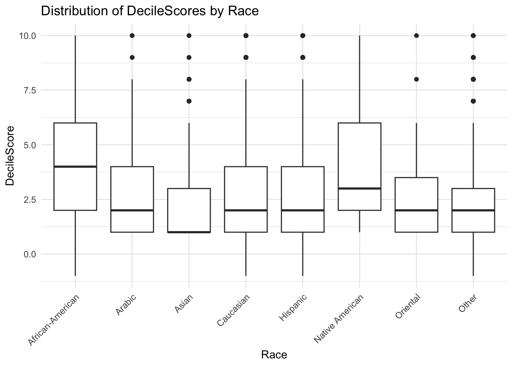
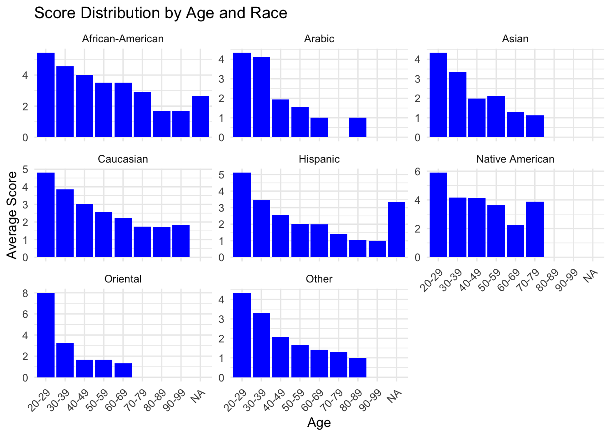

Unveiling Bias: A Deep Dive into the COMPAS Recidivism Scores
The use of algorithmic scoring in criminal justice, specifically the COMPAS (Correctional Offender Management Profiling for Alternative Sanctions) score, has been touted as a way to modernize and streamline sentencing processes. This score is meant to predict the likelihood that an individual will reoffend. However, beneath the digital facade, concerns about bias and fairness persist. Our exploration of the relationship between demographics and COMPAS score provides insights into how these scores correlate with age, sex, and race, highlighting potential biases that could influence judicial decisions and outcomes.
Sex and Race Under the Microscope
First, let’s examine how decile scores distribute across different genders and races. The above figure indicates a generally similar median score for both males and females, though males display a slightly wider range in scores. This could imply a greater variance in how men are assessed, potentially impacting their legal outcomes more diversely than women.

Race, however, tells a more concerning story. The distribution of scores by race reveals that African Americans typically receive higher decile scores compared to other races, hinting at a racial bias embedded within the scoring algorithm. This finding raises crucial ethical questions about the deployment of tools such as COMPAS in a justice system that should be blind to color.
Age, Recidivism, and the Algorithm

Age also plays a significant role in the COMPAS assessments. Younger individuals tend to have higher scores, which gradually decrease with age. This trend is consistent across all racial groups but is more pronounced in some than others, suggesting that age-related biases could intersect with racial biases to compound the effects of an already flawed system.
Conclusion
What does this mean for justice? Our analysis highlights potential disparities in how COMPAS scores are assigned, with troubling implications for fairness and equality in criminal sentencing. These biases could lead to harsher sentencing and higher bail amounts for demographic groups that are already disproportionately affected by the justice system.
As we reflect on these findings, it becomes clear that reliance on such algorithmic assessments without ongoing scrutiny and adjustment perpetuates existing societal inequalities under the guise of objectivity. The path forward must involve transparent, inclusive discussions about the role of technology in justice—a dialogue that prioritizes fairness over efficiency.
Rubric: Other components
Interactive
You will also be required to make an interactive dashboard like this one.
Your Big Data page should include a link to an interactive dashboard. The dashboard should be created either using Shiny or FlexDashboard (or another tool with professor’s approval). This interactive component should in some way support your thesis from your big picture page. Good interactives often provide both high-level understanding of the data while allowing a user to investigate specific scenarios, observations, subgroups, etc.
- Quality and ease of use of the interactive components. Is it clear what can be explored using your interactive components? Does it enhance and reinforce your conclusions from the Big Picture? Plotly with default hover text will get no credit. Be creative!
Video Recording
Make a video recording (probably using Zoom) demonstrating your interactive components. You should provide a quick explanation of your data and demonstrate some of the conclusions from your EDA. This video should be no longer than 4 minutes. Include a link to your video (and password if needed) in your README.md file on your Github repository. You are not required to provide a link on the website. This can be presented by any subset of the team members.
Rest of the Site
Finally, here are important things to keep in mind for the rest of the site.
The main title of your page is informative. Each post has an author/description/informative title. All lab required posts are present. Each page (including the home page) has a nice featured image associated with it. Your about page is up to date and clean. You have removed the generic posts from the initial site template.